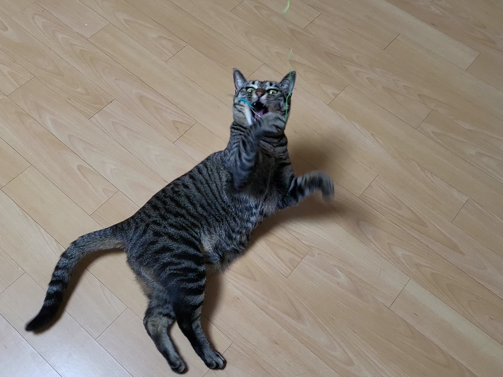
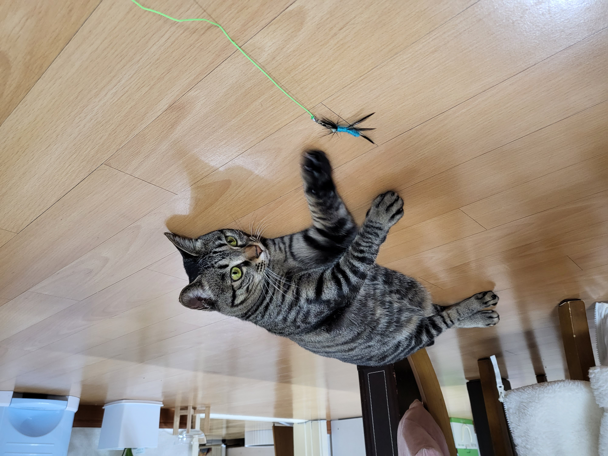

귀엽게 놀고 있는 몬지를 보세요. 너무나 귀엽지 않나요?
세상에서 이렇게 깜찍하게 노는 고양이는 우리 몬지밖에 없을 거에요.

겁이 많은 고양이들은 큰 장난감보다는 작은 장난감을 선호한대요. 우리 몬지도 겁이 많아서 그런지 작은 벌레처럼 생긴 장난감을 좋아해요. 이번에 펫모닝에서 나비모양 장난감 낚싯대를 사줬는데 정말 잘 가지고 놀아요. 얼마나 좋아하는지, 제가 낚싯대를 흔들면 "꺆깎깎!" 거리면서 열심히 사냥감을 눈으로 쫓다가 덥석 잡는답니다. 정말 맹수가 따로 없어요.
그리고 몬지는 끈 장난감도 좋아해요. 예전에 선물 포장용 스웨이드 끈을 풀어서 탁자 위에 올려 놓았는데, 몬지가 코딱지만한 발 열심히 가지고 놀더라구요. 너무 잘 놀길래 끈을 낚싯대에 달아서 놀아줬더니 정말 좋아했어요. 그래서 이후에 다른 끈 장난감도 사주고 제가 만들어주기도 했답니다. 우리 몬지는 정말 멋진 맹수에요 사냥을 정말 잘해요.